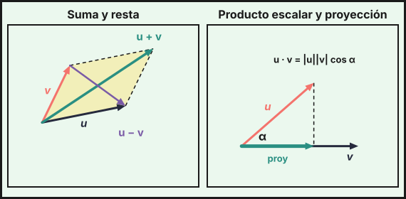
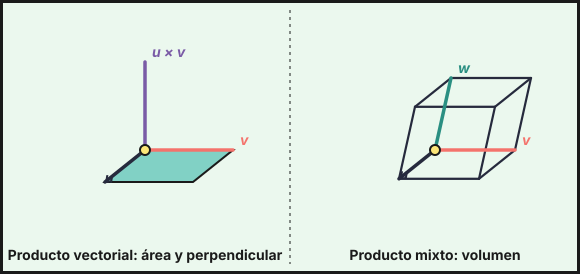

Vectores en el espacio
1. Vectores en \(\mathbb{R}^3\)
Un vector \(\vec u=(u_1,u_2,u_3)\) tiene tres componentes. El vector que va del punto \(A(a_1,a_2,a_3)\) al punto \(B(b_1,b_2,b_3)\) es \[\overrightarrow{AB}=B-A=(b_1-a_1,\ b_2-a_2,\ b_3-a_3)\]
- Módulo: \(|\vec u|=\sqrt{u_1^2+u_2^2+u_3^2}\). Distancia entre dos puntos: \(d(A,B)=|\overrightarrow{AB}|\).
- Vector unitario en la dirección de \(\vec u\): \(\dfrac{\vec u}{|\vec u|}\).
- Suma, resta y producto por un número: componente a componente.
Puntos notables:
- Punto medio de \(A\) y \(B\): \(M=\dfrac{A+B}{2}\).
- Simétrico de \(A\) respecto de \(B\): \(A'=2B-A\).
- Baricentro del triángulo \(ABC\): \(G=\dfrac{A+B+C}{3}\).
- Cuarto vértice del paralelogramo \(ABCD\): \(D=A+C-B\).
2. Dependencia lineal y bases
Los vectores \(\vec u,\vec v,\vec w\) son linealmente dependientes si alguno es combinación lineal de los demás. Si no, son independientes.
- Dos vectores son dependientes si son proporcionales (paralelos).
- Tres vectores son dependientes si son coplanarios, es decir, si \(\det(\vec u,\vec v,\vec w)=0\).
- Tres vectores independientes forman una base de \(\mathbb{R}^3\): todo vector se escribe de forma única como \(\vec t=a\vec u+b\vec v+c\vec w\).
Para hallar las coordenadas \((a,b,c)\) se resuelve el sistema \(a\vec u+b\vec v+c\vec w=\vec t\).

3. Producto escalar
\[\vec u\cdot\vec v=u_1v_1+u_2v_2+u_3v_3=|\vec u|\,|\vec v|\cos\alpha\] donde \(\alpha\) es el ángulo que forman. El resultado es un número.
| Uso | Fórmula |
|---|---|
| Ángulo | \(\cos\alpha=\dfrac{\vec u\cdot\vec v}{|\vec u|\,|\vec v|}\) |
| Perpendiculares | \(\vec u\perp\vec v\iff\vec u\cdot\vec v=0\) |
| Módulo | \(\vec u\cdot\vec u=|\vec u|^2\) |
| Proyección de \(\vec u\) sobre \(\vec v\) | \(\dfrac{\vec u\cdot\vec v}{|\vec v|}\) (longitud con signo) |
| Vector proyección | \(\dfrac{\vec u\cdot\vec v}{\vec v\cdot\vec v}\,\vec v\) |
Ejemplo: \(\vec u=(1,2,3)\) y \(\vec v=(2,-1,1)\) dan \(\vec u\cdot\vec v=2-2+3=3\) y \(\cos\alpha=\dfrac{3}{\sqrt{14}\sqrt6}=\dfrac{\sqrt{21}}{14}\), es decir \(\alpha\approx70{,}9^\circ\).
4. Producto vectorial
\[\vec u\times\vec v=\left|\begin{matrix}\vec i&\vec j&\vec k\\u_1&u_2&u_3\\v_1&v_2&v_3\end{matrix}\right|\]
El resultado es un vector con estas propiedades:
- Es perpendicular a \(\vec u\) y a \(\vec v\).
- Su módulo es \(|\vec u\times\vec v|=|\vec u|\,|\vec v|\sin\alpha\) = área del paralelogramo que forman.
- \(\vec u\times\vec v=-(\vec v\times\vec u)\) (no es conmutativo).
- \(\vec u\times\vec v=\vec 0\iff\vec u\) y \(\vec v\) son paralelos.
Ejemplo: \((1,2,3)\times(2,-1,1)=(2+3,\ 6-1,\ -1-4)=(5,5,-5)\).
Aplicaciones:
- Área del paralelogramo: \(|\overrightarrow{AB}\times\overrightarrow{AC}|\).
- Área del triángulo: \(\dfrac12|\overrightarrow{AB}\times\overrightarrow{AC}|\).
- Vector perpendicular a dos vectores: \(\vec u\times\vec v\). Dividiéndolo entre su módulo se obtiene uno unitario.
5. Producto mixto
\[[\vec u,\vec v,\vec w]=\vec u\cdot(\vec v\times\vec w)=\left|\begin{matrix}u_1&u_2&u_3\\v_1&v_2&v_3\\w_1&w_2&w_3\end{matrix}\right|\]

- Volumen del paralelepípedo: \(V=|[\vec u,\vec v,\vec w]|\).
- Volumen del tetraedro \(ABCD\): \(V=\dfrac16\left|[\overrightarrow{AB},\overrightarrow{AC},\overrightarrow{AD}]\right|\).
- Coplanarios \(\iff[\vec u,\vec v,\vec w]=0\).
- Altura del tetraedro desde \(D\) sobre la base \(ABC\): \(h=\dfrac{3V}{\text{Área}(ABC)}\).
- \(\overrightarrow{AB}=B-A\); punto medio \(=\frac{A+B}{2}\); baricentro \(=\frac{A+B+C}{3}\).
- Escalar → número: ángulo y perpendicularidad. Vectorial → vector: áreas y perpendicular. Mixto → número: volúmenes y coplanaridad.
- Área del triángulo \(=\frac12|\overrightarrow{AB}\times\overrightarrow{AC}|\).
- Volumen del tetraedro \(=\frac16|[\overrightarrow{AB},\overrightarrow{AC},\overrightarrow{AD}]|\).
- Tres vectores forman base \(\iff\det\neq0\).